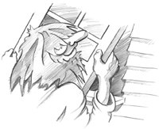
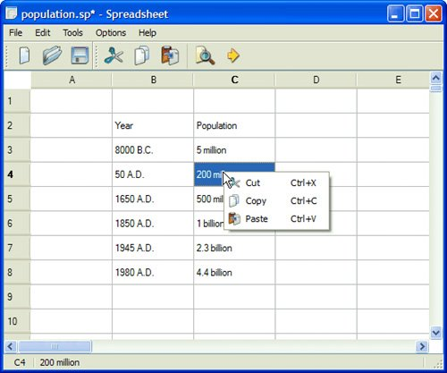

Chapter 3. Creating Main Windows
This chapter will teach you how to create main windows using Qt. By the end, you will be able to build an application's entire user interface, complete with menus, toolbars, status bar, and as many dialogs as the application requires. An application's main window provides the framework upon which the application's user interface is built. The main window for the Spreadsheet application shown in Figure 3.1 will form the basis of this chapter. The Spreadsheet application makes use of the Find, Go-to-Cell, and Sort dialogs that we created in Chapter 2. Figure 3.1. Spreadsheet applicationBehind most GUI applications lies a body of code that provides the underlying functionalityfor example, code to read and write files or to process the data presented in the user interface. In Chapter 4, we will see how to implement such functionality, again using the Spreadsheet application as our example. |